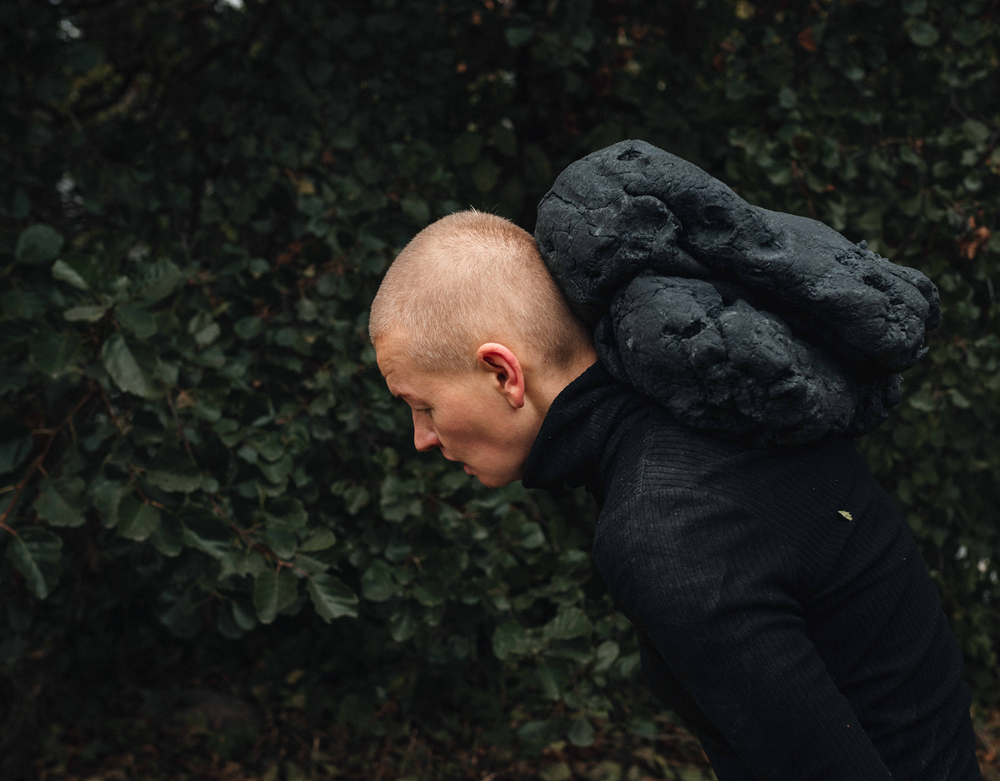

Olga Prokhorova (b. 1981, Udmurtia, Russian Federation) is a performance artist based in Oulu, Northern Finland, working internationally since 2007. Having lived nearly half of her life as an immigrant and being a mother of two sons, her experiences of belonging, displacement, family and gender roles affect her artistic perspective.
Olga’s performance practice is informed by studies in journalism at Udmurtia State University, performance at Sverigefinska folkhögskola, dance at Itä-Suomen Liikuntaopisto, and visual media and communication at Oulu University of Applied Sciences. These different fields shape the way she works with the body, movement, attention, storytelling and the relationship between people and place.
She makes poetic interventions in everyday environments, often working with public space, participation and situations that shift familiar ways of seeing and experiencing. Through this work, Olga seeks to maintain her personal dignity as a human being — a dignity that has been doubted and challenged many times in her life. She creates space for others to recognise their own experiences and embrace the freedom of not being fixed.
Alongside performance, Prokhorova works with poetry and photography. In 2025, she published Märkä kivi (Wet Stone), a book of poetry and photographic self-portraits, extending her exploration of the body, personal narrative and image.
Prokhorova frequently presents her work in the midst of everyday life — on streets, in residential areas and in nature. Her works have been presented internationally in Sweden, Norway, Estonia, Russia and Mexico, and virtually in Germany, India and Canada.
MUU ry member.